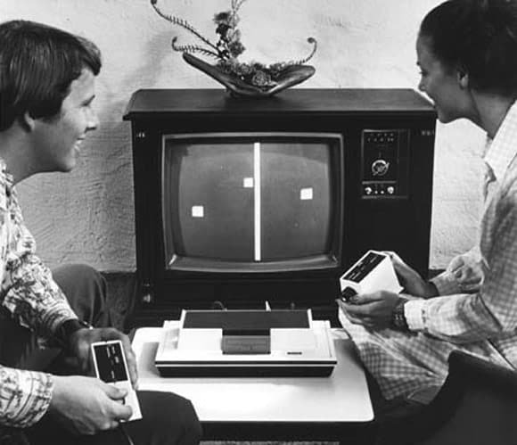
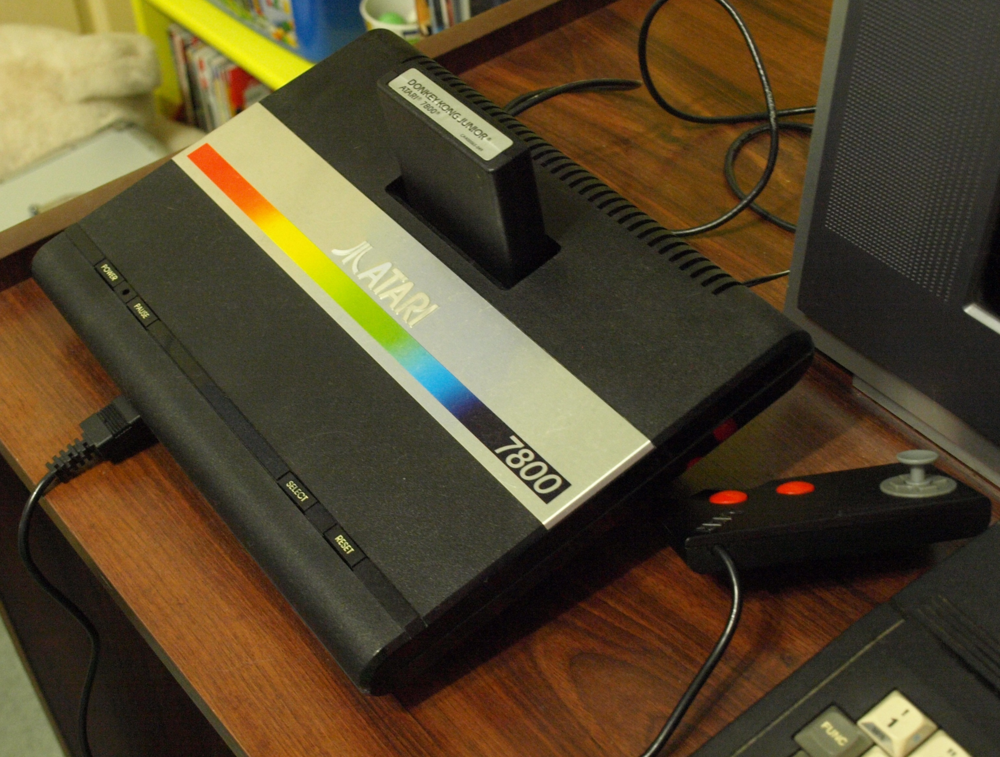
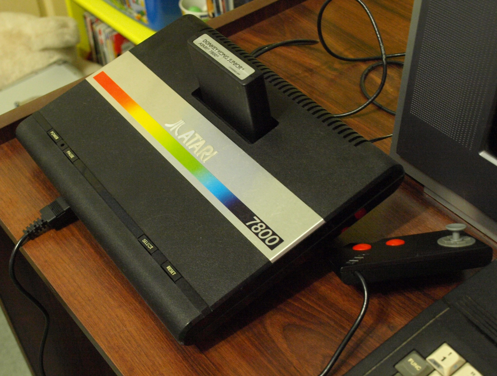
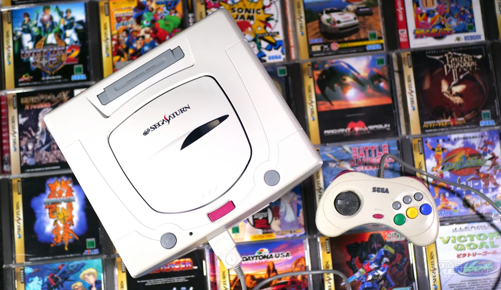
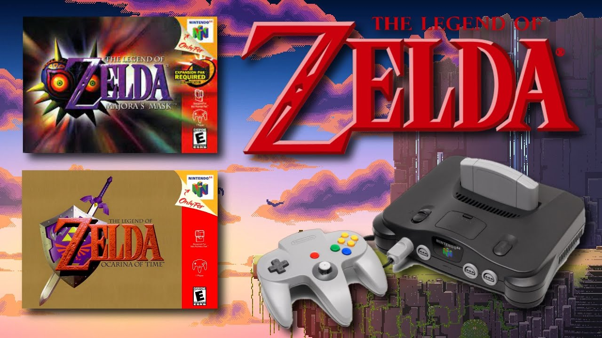
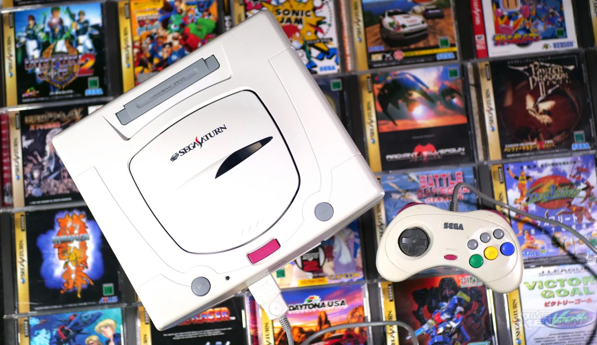
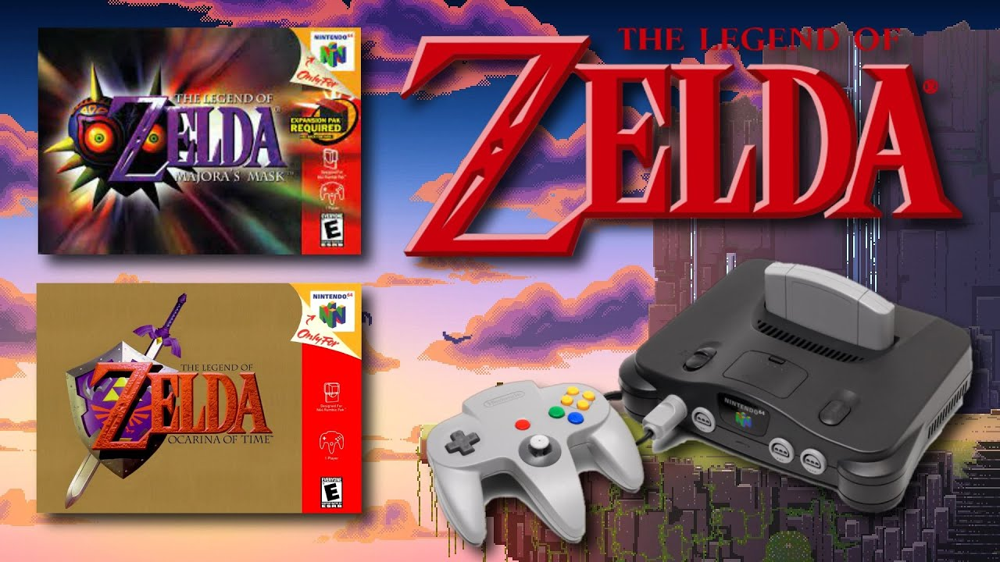
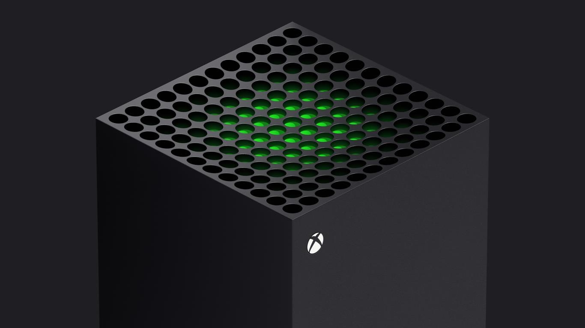
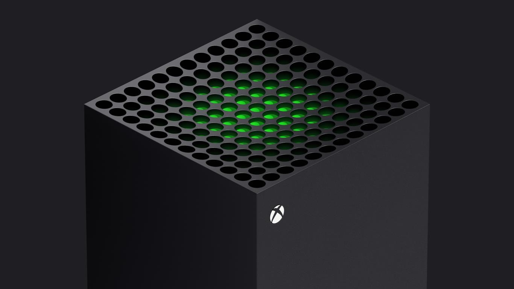

Cómo han ido evolucionando las consolas de videojuegos en el paso de los años
Una consola de videojuegos es un dispositivo electrónico diseñado principalmente para reproducir videojuegos. Estas consolas se conectan a un televisor o monitor y se controlan mediante un controlador, brindandole al usuario una vista sobre el videojuego que quiera jugar, provocando en este diversión.
En la actualidad existen muchos tipos de consolas de videojuegos populares entre las cuales resaltan: incluyen la PlayStation de Sony, la Xbox de Microsoft y la Nintendo Switch de Nintendo. Cada consola tiene su propio conjunto de características y exclusivas que la hacen única.
- PlayStation de Sony
- Xbox de Microsoft
- Nintendo Switch de Nintendo
¿Cuál fué la primera consola de videojuegos?
La primera consola de videojuegos fue la Magnavox Odyssey, lanzada en 1972 por la compañía estadounidense Magnavox. Esta fue desarrollada por Ralph H. Baer, quien es considerado el "padre de los videojuegos" ya que fue el primero en crear uno con una tecnologa más avanzada a la de los demás. Esta consola usaba tarjetas de juego para cambiar las reglas del juego y se conectaba al televisor para mostrar las imágenes en blanco y negro, ya que en ese año aun no existía el la televisión a color.
Aunque esta haya sido la primera consola de videojuegos, no tuvo mucho éxito comercial debido a su alto precio y a la falta de comprensión del público sobre cómo funcionaba, ya que era algo totalmente nuevo para la época. Sin embargo, dió como ese camino para futuras consolas de videojuegos y sentó las bases para la industria de los videojuegos tal como la conocemos hoy en día.
Luego de la invención del Magnavox Odyssey, se abrio paso a lo que se llama la generación de las consolas, la cual va de la primera que es la ya nombrada hasta la novena que es la actual hoy en dia
La segunda generación de consolas de videojuegos, que va desde 1976-1983: introdujo mejoras en la tecnología de los gráficos y el sonido, y las consolas se hicieron más populares entre los consumidores, ya que en esta generación fue creada por primera vez la consola mas conocida en estos años, la cual es Atari. Algunos ejemplos de consolas de esta generación son:
- Atari 2600
- Intellivision
- ColecoVision

La tercera generación de consolas de videojuegos 1983-1995: fue una época importante en la historia de los videojuegos, que trajo consolas icónicas y juegos que todavía son recordados y disfrutados por muchos jugadores hoy en día, además se produjeron importantes avances en la tecnología de los videojuegos, lo que permitió una mayor calidad de gráficos y sonido, y una jugabilidad más compleja. Las consolas de esta generación incluyen:
- Nintendo Entertainment System (NES)
- Sega Master System
- Atari 7800.
 

La cuarta generación de consolas de videojuegos 1987-1996: vio la introducción de la tecnología de 16 bits, lo que permitió una mayor calidad en los gráficos y el sonido, y se extendió desde finales de los años 80 hasta mediados de los años 90, creando los clasicos que aún son recordados en la actualidad. Algunas de las consolas más populares de esta generación son:
- Sega Génesis
- Super Nintendo Entertainment System (SNES)
- NEC TurboGrafx-16
La quinta generación de consolas de videojuegos 1993-2002: introdujo la tecnología de 32 bits y la capacidad de reproducir juegos en 3D. En este año La PlayStation fue la primera consola de videojuegos de Sony y fue un gran éxito comercial, vendiendo más de 100 millones de unidades en todo el mundo durante su ciclo de vida. Fue también la primera consola en utilizar discos CD-ROM. Y no solo playstation destacó en estos años, la nintendo 64 fue una total obra maestra y muy vendida. Las consolas de esta generación incluyen:
- Sony PlayStation
- Sega Saturn
- Nintendo 64
 



La sexta generación de consolas de videojuegos 1998-2013: introdujo la tecnología de 128 bits y mejoró significativamente la calidad de los gráficos y el sonido. Este período que se extendió desde finales de los años 90 hasta principios de los años 2000, y fue un momento de grandes avances en la tecnología de los videojuegos y no podemos dejar atras que en esta generacion se dió paso a los primeros juegos online. Las consolas de esta generación incluyen:
- Sony PlayStation 2
- Microsoft Xbox
- Nintendo GameCube
La séptima generación de consolas de videojuegos 2005-2013: introdujo la tecnología de alta definición (HD) y la capacidad de conectarse a Internet para juegos en línea y descargas digitales. Tambien se dió paso a lo que fué una jugabilidad única con movimientos físicos, uso de accesorios externos adaptables a las consolas y una amplia jugabilidad online, como lo fué en primer lugar Grand theft auto V. Las consolas de esta generación incluyen:
- Sony PlayStation 3
- Microsoft Xbox 360
- Nintendo Wii

La octava generación de consolas de videojuegos 2012-2017: se caracterizó por la introducción de nuevas características y tecnologías, como juegos en línea, gráficos en alta definición, realidad virtual y aumentada, y conectividad social. Para estas consolas aún siguen creando juegos y existen extensiones dentro de estas permitiendo jugar videojuegos de consolas anteriores. Las consolas de esta generación incluyen
- Sony PlayStation 4
- Microsoft Xbox One
- Nintendo Switch

La novena generación de consolas de videojuegos que aún sigue en proceso pero esta empezó desde 2019: se espera que continúe en los próximos años. Esta generación se caracteriza por el uso de tecnologías más avanzadas, como la realidad virtual y aumentada, el trazado de rayos y la resolución 4K y 8k, así como la conectividad en la nube y la integración con dispositivos móviles. Esta trae consolas y juegos cada vez más avanzados y emocionantes para los jugadores. Por los momentos las consolas de esta generación incluyen:
- Sony PlayStation 5
- Microsoft Xbox Series X/S
- Nintendo Switch OLED
 
